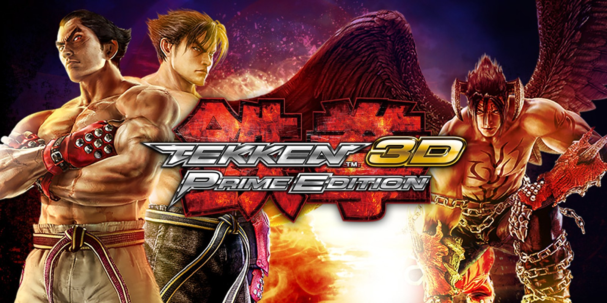

Date: 2012-02-14
Title: Tekken 3D: Prime Edition
Summary: A portable Tekken experience featuring enhanced 3D visuals and a bundled CGI movie.
Categories: Spin-Off, Portable
Type: Game Files
File Size: ~2 GB
Format: ROM
Region: Japan / USA / Europe
Platform: Nintendo 3DS
Tekken 3D: Prime Edition is a spin-off entry released for the Nintendo 3DS, offering a portable Tekken experience with full stereoscopic 3D support. The game features a large roster of characters from Tekken 6 and focuses on smooth performance and fast gameplay on handheld hardware. In addition to the fighting content, it includes the full CGI movie "Tekken: Blood Vengeance", making it a unique bundle for fans of the series. While it does not introduce major new mechanics, it stands out as a solid portable adaptation of the Tekken formula.
Note: Support Original Game By buying it . --Tekken 3D : Prime Edition Can be Played By either a real Nintendo 3DS or By Nintendo 3DS Emulatores via Pc. Download